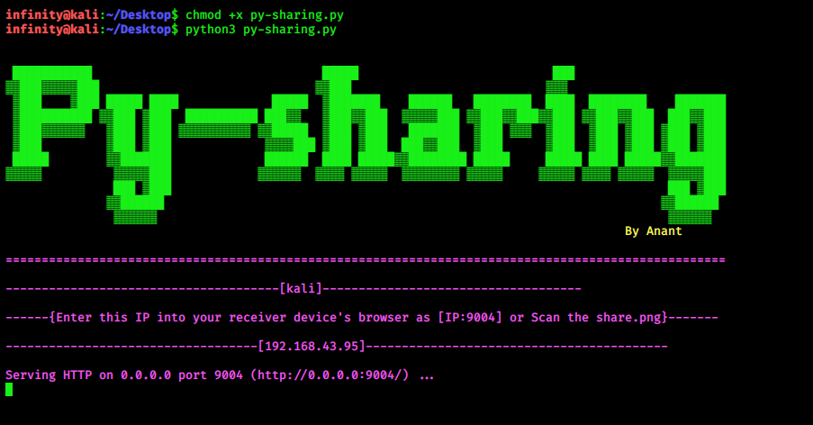
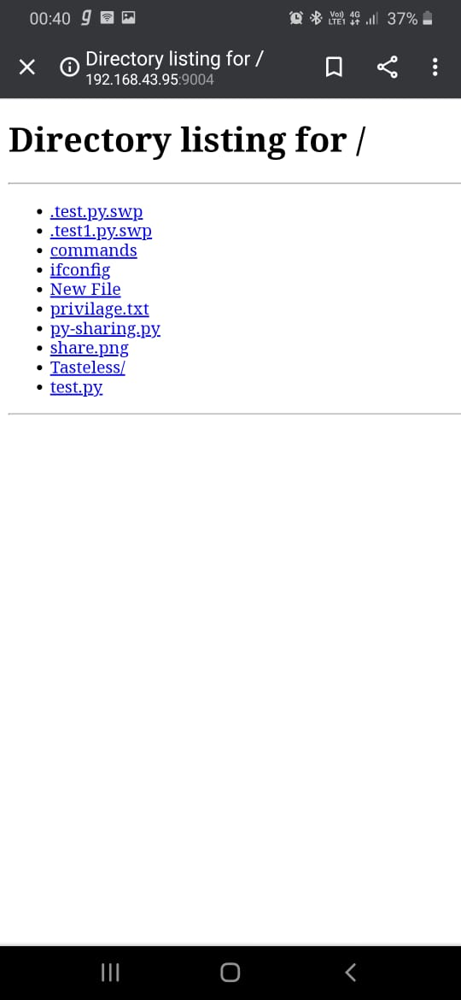
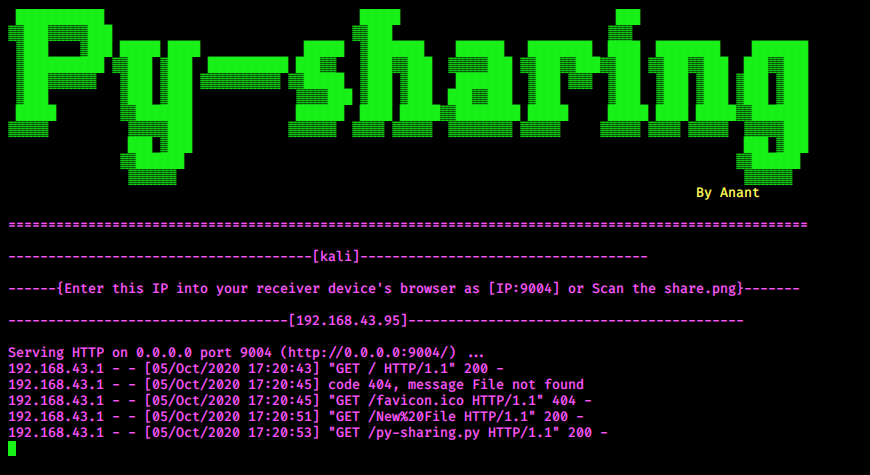
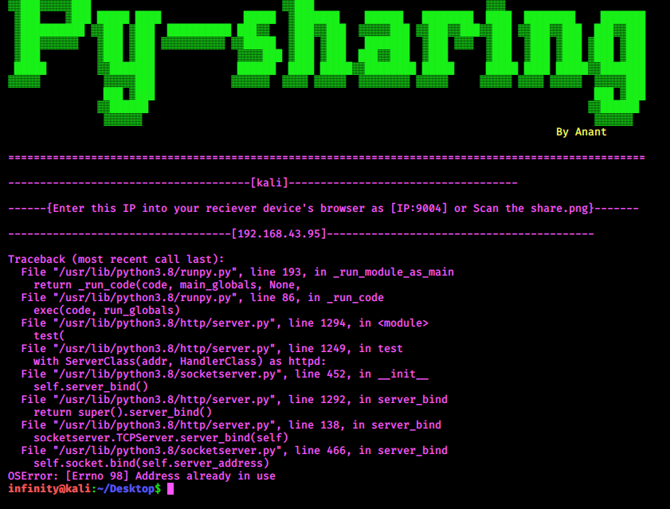
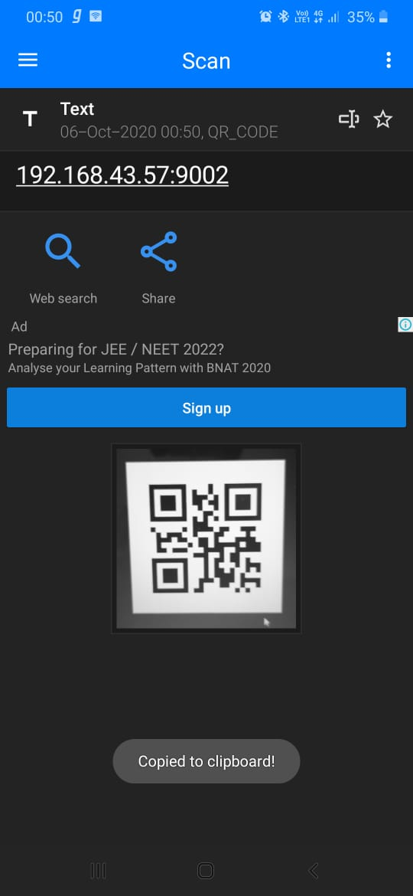
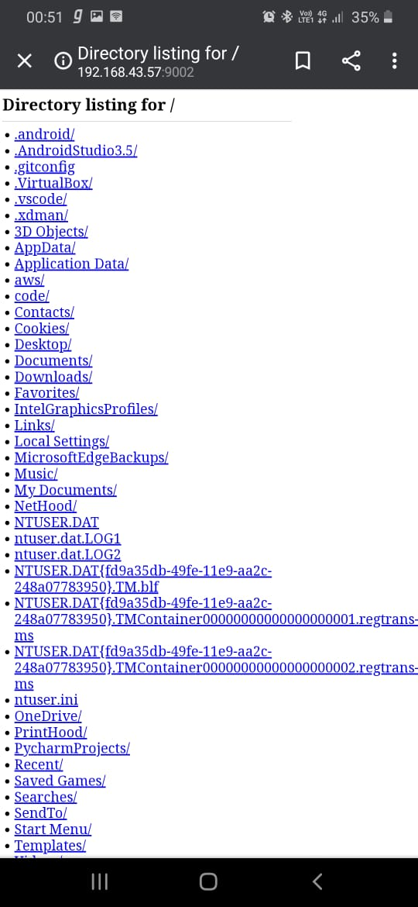

Py-sharing
Linux :
If your base operating system is not linux, then you have to connect Wireless adapter to your machine because we need to connect our receiver device through local network, until you didn't connect wifi adapter Pc can't assign IPv4 address of Wireless LAN adapter. Once you connect adapter and set Pc and your Phone on same network. open terminal and change the directory you want to share. Make sure you have python3, qrcode, installed on your system , If not then, run these command.> sudo apt-get install python3
> sudo apt-get install python3-qrcode
After that clone my repo from github website by git clone command. And give permission to py-sharing.py file.> chmod +x py-sharing.py
and run this file as python3.

After Banner you can see, it gives hostname of your Pc after that it will assign you an IPv4 address and make an png file of qrcode which contain
your assigned IP and port on which server is running. By default I took port number 9004 (i don't why), you can take any random number (=<65535),
and in last line it shows "serving HTTP on 0.0.0.0 port 9004 (http://0.0.0.0:9004)" it means now our server can listen any IP (must be on same network) and ready to share files.
Here 0.0.0.0 means to any IP address, means any device can connect with this computer on 9004 port number but they both should be on same network.
Now you have two option either you type the ip in your browser which is assign to you on terminal with port (IP:PORT) or else you scan the qrcode image which is saved on the Desktop (Please change the Path png file will saved, I wrote path according to my system).

You can download from here to your phone or can just open and read.
All the history will shown on terminal as well.

If you find this error,then try to change port number in the script. This error will not come in Windows.

Windows:
For Windows, we don't need any adapter just connect with your WiFi, and here we go :) first clone the repo from github, and then open cmd in that directory which you want to share. write py-sharing.py path with python (now i don't why in windows this script run with python not with python3, so use with python instead python3).


You will find your all files there of that directory in which you opened your cmd.

Detail of file you open in your phone it will be show in terminal.